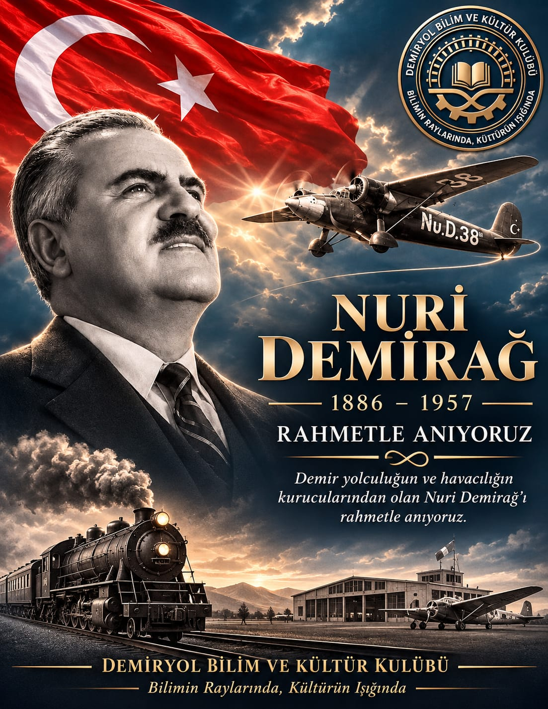
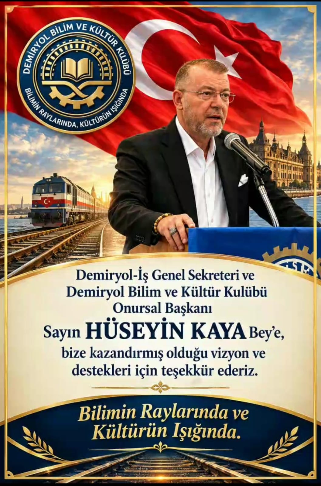
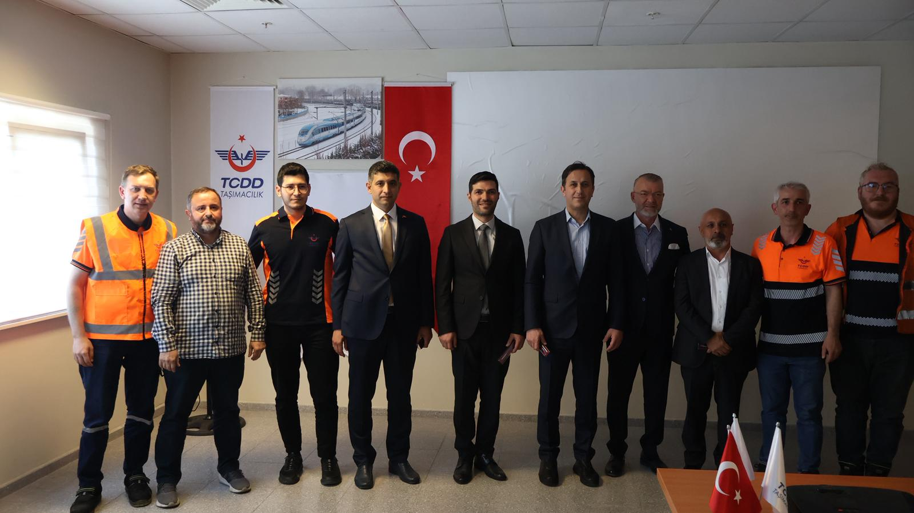

Saha Tecrübesiyle Şekillenen Yerli & İnovatif Teknolojiler
TCDD Taşımacılık A.Ş. Gebze Vagon Bakım Onarım Atölye Müdürlüğü bünyesinde doğan; demiryolu mekaniği, emniyet sistemleri ve saha tecrübesini bilimsel yaklaşımlarla harmanlayan kurumsal platform.
💡 BİLİYOR MUYDUNUZ? • TEKNİK & DÜNYA DEMİRYOLU BİLGİSİ
Yük vagonlarında tekerlek yüzeyinde oluşan 1 mm'lik apleti (düzleşme), raya uygulanan darbe kuvvetini %300 oranında artırır. Sensörlü takip sistemleri bu arızaları anında yakalar.
📌 Hatırlatmalar ve Özel Günler
Tarihimize iz bırakan değerlerimiz, anma günlerimiz ve kurumsal kutlamalarımız.
24 KASIM • ÖZEL KUTLAMA
Öğretmenler Günü Kutlu Olsun
Eskişehir Eğitim Merkezi hocalarımızın Öğretmenler Günü'nü kutlarız.
Afişi Tam Boyut Gör ➔
22 KASIM 1948 • ANMA GÜNÜ
Medine Müdafii Fahreddin Paşa
Çöl Kaplanı Fahreddin Paşa'yı vefatının 78. yılında rahmetle anıyoruz.
Afişi Tam Boyut Gör ➔

13 KASIM 1957 • ANMA GÜNÜ
Nuri Demirağ'ı Rahmetle Anıyoruz
Demiryolculuğun ve yerli havacılığın öncüsü Nuri Demirağ.
Afişi Tam Boyut Gör ➔
🌍 Dünya Demiryolu Teşkilatlarından İlginç Bilgiler
Kartların üzerine tıklayarak detaylı mühendislik ve rekor bilgilerine ulaşabilirsiniz.
🇯🇵 JAPONYA • SHINKANSEN
60 Yıldır Ölümlü Kaza Yok
Saatte 320 km hıza rağmen Shinkansen ağında 60 yıldır tek bir ölümlü kaza yaşanmamıştır. Yıllık ortalama gecikme ise 12 saniyedir.
Detayları Oku ➔
🇨🇭 İSVİÇRE • GOTTHARD TÜNELİ
Dünyanın En Uzun Tüneli
Yer yüzeyinin 2.300 metre altında, 57 km uzunluğuyla dünyada en uzun ve en derin tüneldir.
Detayları Oku ➔
🇨🇳 ÇİN • SHANGHAI MAGLEV
Havada Süzülen Trenler
Çelik tekerlek temasız mıknatıslar üzerinde havada süzülerek ticari hatta 431 km/s hıza ulaşan sistem.
Detayları Oku ➔
🇦🇺 AVUSTRALYA • BHP IRON ORE
Dünyanın En Ağır Treni
682 vagon ve 8 lokomotiften oluşan 7,3 kilometre uzunluğundaki 99.734 tonluk rekor tren.
Detayları Oku ➔
🇫🇷 FRANSA • TGV REKORU
574.8 km/s Tekerlek Hızı
Çelik tekerlekli demiryolu araçlarında kırılması zor olan 574.8 km/s dünya hız rekoru.
Detayları Oku ➔
🇷🇺 RUSYA • TRANS-SİBİRYA
8 Saat Dilimini Geçen Hat
Moskova-Vladivostok arası 9.289 km uzunluğuyla 8 farklı saat dilimini kesen devasa güzergah.
Detayları Oku ➔
🛑 Fren Evi Dijital Kontrol Paneli
Bilimin Raylarında, Saha Tecrübesinin Ocağında • Gebze Fren Sistemleri Birimi
GEBZE FREN KOKPİTİ // TEKNİK HAFIZA
ANAHAT: 5.0 BAR (STABİL)
1. Purjör Tutulması (Blokaj)
⚠️ Saha Belirtisi: Pnömatik test sırasında purjör çıkışından su/hava tahliyesinin olmaması, silindir boşaltma gecikmesi.
Basınç Tahliyesi: İlgili hattın basıncı emniyetli şekilde sıfırlanır.
Söküm: Purjör gövdesi sökülerek yay tansiyonu ve O-ringler kontrol edilir.
Temizlik: Tiftiksiz bez ve onaylı solüsyon kullanılır (Asla zımpara kullanılmaz).
Conta Yenileme: Deforme olmuş contalar orijinal yenileriyle değiştirilir.
Saha Testi: Hat 5 bar basınçlandırılarak manuel/otomatik tahliye test edilir.
2. Regülatör (Boşluk Kolu) Ayarsızlığı
⚠️ Saha Belirtisi: Pabuç-tekerlek mesafesinin standart dışı olması, sefer sonrası tekerleklerde aşırı lokal ısınma.
Ölçüm: Pabuçlar serbestken kumpas/mastar ile çalışma boşluğu ölçülür.
Temizlik: Cırcır dişlileri balata tozu ve kirden arındırılır.
Kalibrasyon: Ayar cıvatasıyla milimetrik çalışma boşluğu ayarlanır.
Emniyet: Bağlantı pimleri ve emniyet segmanları doğrulanır.
Fonksiyon: Test tezgahında deneme frenlemesi yapılır.
Akerman Ana Hat
Vagona hava bağlanan musluktur. Vagonlar arası pnömatik ana boru hattını açıp kapatmaya yarar.
Menot Bağlantı
Fren sisteminde veya hat üzerinde manevra, bakım ya da tahliye amacıyla kullanılan ara bağlantı elemanıdır.
Kaplin Hortum
Vagonlar arasında basınçlı havanın kesintisiz iletilmesini sağlayan esnek fren hortumu başlığıdır.
Distribütör Valf Kontrol
Ana borudaki basınç değişimlerine göre silindire hava dolumunu yöneten ana valftir (SAB WABCO / Knorr-Bremse).
Regülatör Ayar
Pabuç aşındıkça tekerlek arasındaki çalışma boşluğunu otomatik sabitleyen mekanik ayar koludur.
Purjör Tahliye
Sistem içerisindeki aşırı basıncın, havanın veya yoğuşan suyun dışarı atılmasını sağlayan tahliye valfidir.
💧 Purjör Bakımı Püf Noktaları
Özellikle mevsim geçişlerinde hava hatlarında biriken kondens suyu korozyona yol açar. Manuel tahliye aksatılmamalı; temizlikte tiftiksiz bez tercih edilerek oturma yüzeyleri asla aşındırılmamalıdır.
⚙️ Regülatör Bakımı Püf Noktaları
Cırcır dişlileri yoğun toz ve balata tozuna maruz kalır. Bakımda özel gres ile yağlanmalı, bağlantı pimleri ve burçlar aşınma yönünden incelenmelidir. Yanlış ayar tekerlek apleti riskini tetikler.
🎛️ Test Tezgahı SAB / KNORR
ANA BORU (HENDE)5.0 BAR
FREN SİLİNDİRİ0.0 BAR
[SİSTEM HAZIR] Ana boru 5.0 bar. Frenler çözük konumda.
🧮 Fren Yüzdesi (λ) UIC
TOPLAM: 62.0 t FREN ORANI
%87.1
KATEGORİ
Başlık
Açıklama metni...
Kulüp Duyuruları ve Haberler
Atölye, Ar-Ge ve kulüp içi en güncel gelişmelere kartlara tıklayarak ulaşabilirsiniz.
İSG, Çalıştay ve Gelecek Etkinlikler
Atölye içi İSG farkındalığı, Ar-Ge atölyeleri, teknik geziler ve fuar katılımlarımız.
📅 Gelecek ve Planlanan Etkinlikler
ULUSLARARASI FUAR • 24-26 MART 2027
Eurasia Rail Fuar Katılımı
Yerli ve milli Ar-Ge projelerimizin demiryolu sektörüne ve uluslararası katılımcılara stant gösterimi ile tanıtımı yapılacaktır.
Etkinlik Detayları ➔
SAHA İNCELEMESİ • PLANLANAN
Teknik Geziler ve Atölye Ziyaretleri
Demiryolu sektöründeki modern bakım merkezleri ve teknoloji tesislerine yönelik planlanan teknik turlar.
Etkinlik Detayları ➔
SOSYAL ETKİNLİK • BAHAR 2027
Bahar ve Sosyal Kültür Buluşmaları
Kulüp üyeleri ve bakım personeli arasındaki dayanışmayı pekiştiren geleneksel sosyal organizasyonlar.
Etkinlik Detayları ➔
ÇALIŞTAY / WORKSHOP • DÜZENLİ
Ar-Ge & İnovasyon Atölyeleri
Sahada karşılaşılan teknik problemlere yönelik pratik çözüm fikirlerinin değerlendirildiği tasarım çalışma grupları.
İlk fırsatta Demiryol Bilim ve Kültür Kulübü\'nün de bir robotu olacak ve adını gururla koyuyoruz:RAYMAN!
Saha otomasyonunda ve Ar-Ge çalışmalarımızda öncü olacak Rayman ile geleceğin akıllı demiryollarını bugünden inşa ediyoruz.', 'fuarrobot.jpeg')" onerror="tryNextImg(this, ['fuarrobot.jpg', 'resimler/fuarrobot.jpeg'])">
📸 İSG Farkındalık Toplantısı Görselleri
Teknik Projelerimiz & Ar-Ge Vizyonu
Kartlara tıklayarak projelerin teknik mimarisine ve detaylı saha raporlarına ulaşabilirsiniz.
PROJE 1 • AKILLI TANIMA
Demiryolu Araç Kimliği Tanıma Sistemi
Demiryolu araçlarının kimlik bilgilerinin hızlı ve otomatik olarak tespit edilmesi amacıyla Görüntü İşleme Tabanlı Araç Kimliği Tanıma Sistemi geliştirilmiştir.
Proje Detaylarını İncele ➔
PROJE 2 • KESTİRİMCİ BAKIM
Apleti Tespit Sistemi
Demiryolu araçlarında tekerlek apleti oluşumunun erken tespit edilmesi ve bakım süreçlerinin desteklenmesi amacıyla Piezo Sensör Tabanlı Aplet Tespit Sistemi geliştirilmiştir.
Proje Detaylarını İncele ➔
PROJE 3 • SAHA EMNİYETİ
Manevra İkaz Sistemi
Atölye ve sahalarımızda gerçekleştirilen manevra operasyonları sırasında iş güvenliğini artırmak ve personeli manevra faaliyeti hakkında bilgilendirmek amacıyla Manevra İkaz Sistemi kurulmuştur.
Proje Detaylarını İncele ➔
PROJE 4 • AKILLI ATÖLYE
Dijital Vagon Takip Sistemi
Atölyemizde yürütülen vagon bakım ve onarım süreçlerinin etkin şekilde takip edilmesi ve kayıt altına alınması amacıyla Dijital Vagon Takip Sistemi geliştirilmiştir.
Proje Detaylarını İncele ➔
Hakkımızda & Kulüp Yapısı
Saha deneyimi, mühendislik disiplini ve kurumsal demiryolu kültürü.
KURUMSAL KİMLİK
Biz Kimiz?
Demiryol Bilim ve Kültür Kulübü, TCDD Taşımacılık A.Ş. Gebze Vagon Bakım Onarım Atölye Müdürlüğü bünyesinde doğan; demiryolu mekaniği, emniyet sistemleri ve saha tecrübesini bilimsel yaklaşımlarla harmanlayan kurumsal bir platformdur.
Kulübümüz; vagon bakım-onarımı süreçlerinden pnömatik fren sistemlerine, tekerlek torna operasyonlarından dijital otomasyon ve Ar-Ge çözümlerine kadar uzanan geniş bir alanda teknik hafızayı korumak ve geliştirmek amacıyla kurulmuştur. İşçi ve memur ayrımı gözetmeksizin tüm demiryolu çalışanlarını aynı çatı altında buluşturan yapımız, saha pratiklerini mühendislik disiplini ve kurumsal kültürle geleceğe taşımaktadır.

⭐ ONURSAL BAŞKANIMIZ
Hüseyin Kaya
Kulübümüzün kurumsal vizyonuna ve demiryolu mirasına öncülük eden Onursal Başkanımız.
Detayları Görüntüle ➔
YÖNETİM & DANIŞMA
Yönetim Kadrosu
Onursal Başkan: Hüseyin Kaya Genel Koordinatör: Mehmet Yılmaz Yönetim Başkanı / Onursal Danışman: Kadir Çadır Ar-Ge Sorumlusu: Enes Piryandı
OPERASYON & İLİŞKİLER
Koordinasyon Ekibi
Saha Eğitim Sorumlusu: Sercan Gençtoğ Lojistik & Operasyon ve Dış İlişkiler: Fatih Demirci Lojistik & Operasyon: Hakan Emre Tazegül Merkez Üs: Gebze Vagon Bakım Onarım Atölye Müdürlüğü, Kocaeli
📸 Atölyemiz ve Çalışma Sahamız

Temel Çalışma İlkelerimiz ve Yaklaşımımız
YERLİ İNOVASYON
Saha Deneyimi
Gebze atölye sahasındaki nitelikli iş gücü ve teknik birikimle yerli çözümler üretiyoruz.
Detay ➔
İSG VE EMNİYET KÜLTÜRÜ
Önce İnsan Güvenliği
Atölye sahalarında Fine-Kinney risk değerlendirmeleri ve 5S metodolojisi ile güvenli ortam.
Detay ➔
TEKNİK HAFIZA
Fikri Mülkiyet
Geliştirilen projelerin ve yazılımların belgelenerek kurum hafızasının sürdürülebilir kılınması.
Detay ➔
🎯 HEDEFİMİZ
Misyonumuz
Demiryolu taşımacılığı ve vagon bakım-onarım süreçlerinde teknik standartları yükseltmek; saha emniyetini artırıcı teknolojik projeler (Manevra İkaz, Araç Takip, Tekerlek Muayene vb.) geliştirmek; İş Sağlığı ve Güvenliği farkındalığını üst seviyeye çıkararak çalışanlar arasındaki bilgi paylaşımını ve kurumsal bağı pekiştirmektir.
👁️ GELECEK VİZYONUMUZ
Vizyonumuz
Gebze'den yakılan teknik ve kültürel meşaleyi ulusal ölçekte bir standart haline getirerek; demiryolu teknolojileri, saha emniyeti ve teknik inovasyon alanlarında referans gösterilen, üreten ve kurumsal kültüre öncülük eden saygın bir bilim ve kültür platformu olmaktır.